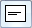
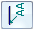
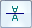

Callout command bar
The options that are available depend on whether you are working in a draft document or in a model document.
- Dimension Style Mapping
-
Specifies that the element-to-style mapping settings on the Dimension Style tab of the Solid Edge Options dialog box determine the dimension style to use for placing dimensions and annotations. When you set this option, Dimension Style is unavailable.
- Dimension Style
-
Lists and applies the available styles. This control is unavailable when Dimension Style Mapping is selected.
- Text scale
-
Applies a scale value to the current text height. Increasing or decreasing the text scale changes the overall text size. The default is 1.0.
 Properties
Properties-
Displays the Callout Properties dialog box.
 Saved Settings
Saved Settings-
Lists and applies the callout formats you have created and saved in the Callout Properties dialog box.
- Angle
-
Specifies the orientation angle of the callout.
- Width
-
Specifies the exact width of the callout.
This option is not available for PMI callouts. You can resize a fixed-width PMI callout box using the edit point handle.
- Leader
-
Displays a leader line.
- Break Line
-
Places a break line on the leader.

Horizontal Alignment-
Aligns the callout to the right, to the left, or in the center.
 Position
Position-
Positions the callout either above the break line or embedded in the break line.
The Position option must be set to Above
 if you want to show a taper symbol on the callout. Example:
if you want to show a taper symbol on the callout. Example:
The Taper Symbol option is available on the General tab (Callout Properties dialog box).
- Underline Text
-
Underlines each line of text in a selected callout.

Parallel Text-
Sets the callout text parallel to the geometry or other annotation to which it is attached. When you move the callout or the attached geometry, the callout maintains its relative parallel orientation.
If setting the Parallel Text option results in the callout text being upside down, use the Invert Text button to turn it upright.

Invert Text-
Inverts the selected callout text. Callout text that is parallel to an object remains parallel.
- Show Border
-
Displays a border around the callout text.
You can adjust the horizontal and vertical gap between the text and the border on the Border tab (Callout Properties dialog box).
- Text Control
-
Specifies how callout text size is managed within the callout text box.
- Fit to Content
-
Automatically sizes the width of the callout box to its contents.
Use this option to ensure that the border always fits around resolved property text strings.
- Fixed—Adjust Aspect Ratio
-
Maintains the width of the callout to be exactly the value specified in the Width box by automatically adjusting the aspect ratio. This changes the width of all of the characters in the callout text, without changing their height.
Note:For PMI callouts, the callout width is determined by the initial content and the aspect ratio. You cannot predefine a value in the Width box.
- Fixed—Wrap Text
-
Automatically word-wraps the text that extends beyond the specified line width. A new line is started each time the characters in a word exceed the width of the callout box.
To learn more, see Formatting callout text and border.
 Lock Dimension Plane
Lock Dimension Plane -
Sets the active dimension plane for the creation of PMI dimensions and annotations. The active dimension plane controls how values are calculated and how the text is displayed.
You are prompted to specify the dimension plane by clicking a planar face or reference plane. The plane remains locked until you unlock it by pressing F3.
 Referenced Geometry
Referenced Geometry-
Specifies that you want to select multiple edges, faces, or surfaces to be referenced by a single PMI annotation. You also can select this option when editing the annotation, to add or remove reference elements. Use the Select Reference Geometry command bar to accept the selection set, and then return to the hosting command workflow to finish adding or editing the annotation.

For more information, see Select multiple reference elements.
How do I
Place a calloutPlace a hole callout
Place a feature callout
Customize a feature callout
Define smart feature properties in the Dimension style
Learn more
Formatting callout text and borderManipulating callouts
Look up more details
Callout commandCallout Properties dialog box
General tab (Callout Properties dialog box)
Text and Leader tab
Feature Callout tab
Border tab (Callout Properties dialog box)
Quick links
Place a feature callout dimensionBasic reference and property text rules
Format codes to modify reference and property text output